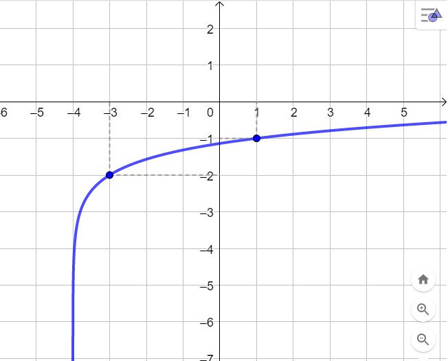
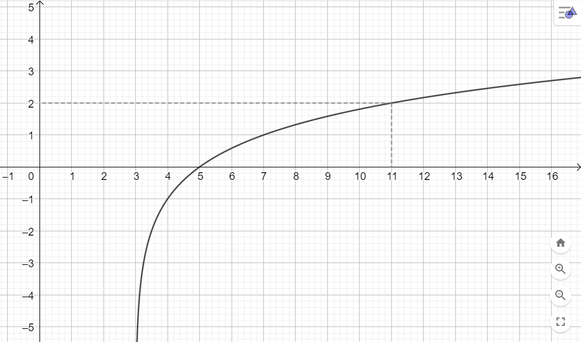

Riempire le caselle presenti nella funzione
\[
f(x) = log_{_{\boxed{\color{transparent}{a}}}}(x \,\,\boxed{\color{transparent}{ + a}}\color{black}{}) \boxed{\color{transparent}{+ a}}
\]
in modo che ha come grafico quello rappresentato nella seguente immagine.

Suggerimento
In sostanza, a partire dal grafico a vogliamo individuare
la traslazione orizzontale
(ragionate sull'asintoto);
la traslazione verticale
(ragionate sul punto \((-3\,;\,\, -2)\)).
la base del logaritmo
(ragionate sul punto \((1\,;\,\,-1)\));
Esercizio 2
Rappresentare il grafico della funzione
\[
f\left(x\right) = log_{_{\frac{1}{2}}} \left(x + 2\right) - 3
\]
mettendo in evidenza nella figura il valore di \(f\) in \(x = 2\) ed \(x = -\frac{3}{2}\)
Soluzione:
Esercizio 3
Scrivere la funzione logaritmica rappresentata dal seguente grafico

\(\triangleright\) Qual è il dominio della funzione?
\(\triangleright\) Per quali valori della \(x\) la funzione assume valore positivo?
Promemoria:
Nel contesto delle equazioni l'insieme dei valori per i quali l'equazione è definita viene chiamato
"campo di esistenza".
Nel contesto delle funzioni, invece, l'insieme dei valori per i quali la funzione è definita
viene indicato come "dominio" della funzione.
Si ha quindi la seguente definizione:
Il dominio di una funzione è l'insieme dei valori di \(x\) che la rende definita.